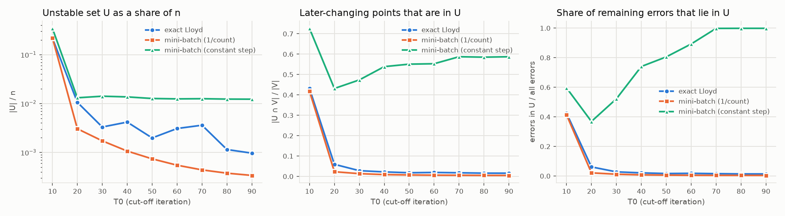
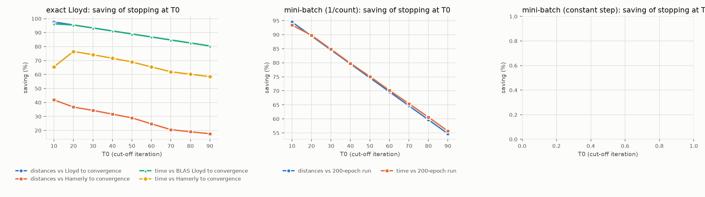
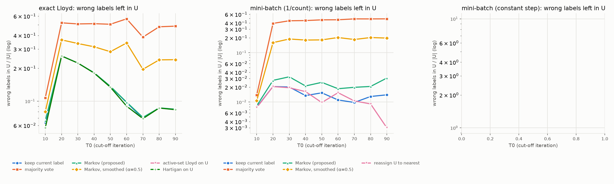
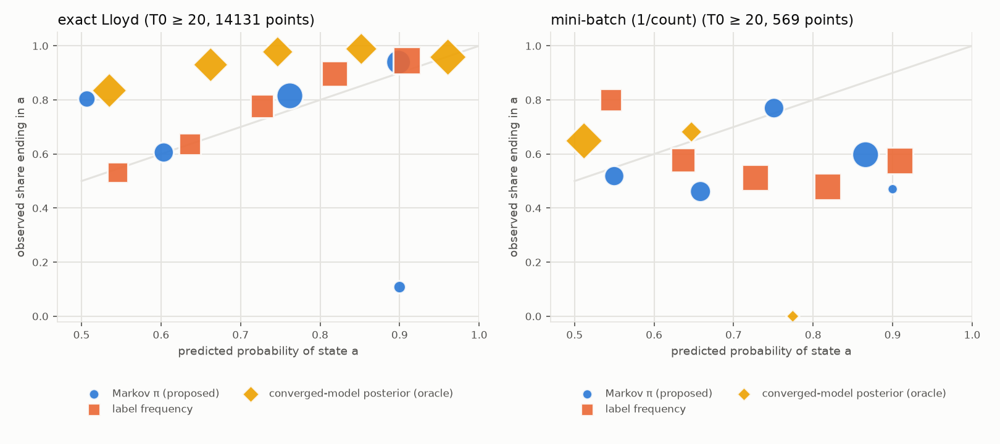
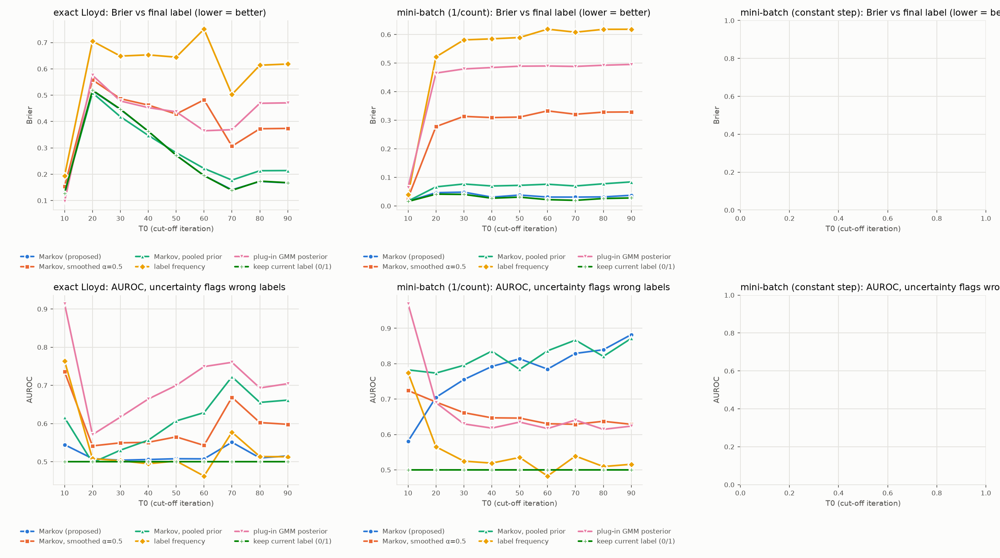
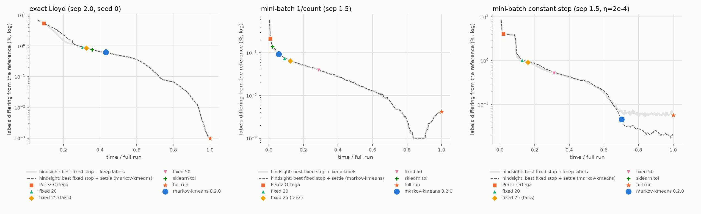
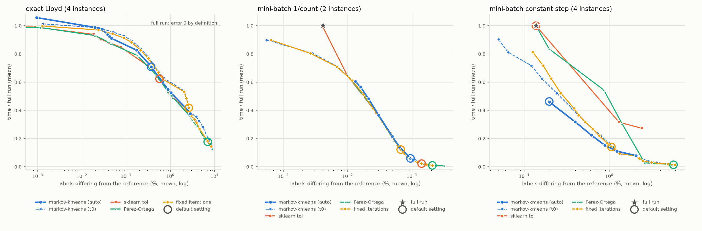
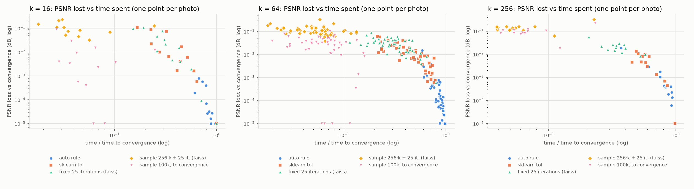
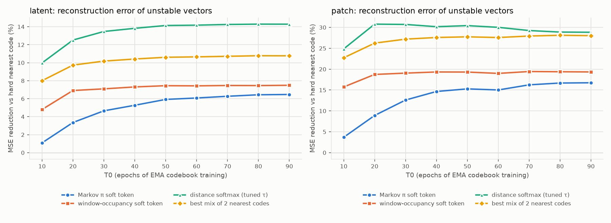

K-means가 충분히 반복된 뒤에도 클러스터 주소가 바뀌는 극소수 벡터를, 각자의 라벨 이력으로 만든 Markov 연쇄의 장기 분포로 편입하는 알고리즘을 평가했다. 계산량, 오차, 연속 해석(예: π = [0.5, 0.5])을 T₀ = 10, 20, …, 90마다 같은 상태에서 비교했다. 언제 개입할지를 전체 상태로 판단하는 자동 규칙을 더해 markov-kmeans 0.2.0으로 배포했고, 색 양자화와 VQ 코드북에도 적용했다.
N 10⁷ · 3×10⁷d 16 · 128k 50 · 100수렴 조건 ≥ 100회창 W 10사진 100장2026-10-02 기준
틀릴 점 탐지 AUROC (mini-batch)0.71–0.98 vs GMM 0.60–0.75
자동 판단 · N=10⁶, 10개 사례
언제 개입할지가 핵심
움직임·대표점·분할을 보고 멈춘다
끝까지 대비 시간 (판정 비용 포함)6 ~ 83%
오류율0.05 ~ 0.62%
상수 스텝: sklearn tol / 자동안 멈춤 / 10–62%
정확 Lloyd: sklearn tol 대비 오류4개 모두 더 작음
더 싸면서 더 정확한 대안10개 중 0개
알고리즘
라벨 이력 → 전이행렬 → 장기 분포 π
최근 10회 사이에 라벨이 바뀐 점(비수렴 집합 U)마다, 방문한 클러스터 사이의 전이 횟수로 전이행렬을 만든다. 현재 라벨에서 출발한 연쇄의 장기 분포 π를 구해 hard(argmax π) 또는 soft(π 자체를 소속도)로 편입한다. 실험에서 관찰된 세 가지 이력 패턴이 결과를 대부분 설명한다.
표류 (정확 Lloyd에서 가장 흔함)
AAAAABBB
π = [0, 1] → B
B가 흡수 상태라 B로 편입한다. 다수결은 A를 골라 틀린다. Markov의 확실한 장점이다.
진동 (상수 스텝에서 흔함)
ABABAB
π = [0.5, 0.5]
표류 체제에서는 드물고 대부분 나중에 한쪽으로 정착한다. 상수 스텝에서는 80%가 실제로 계속 오가며, π가 그 비율을 잘 맞힌다.
이동의 전조
AAAABAAAAA
π = [0.9, 0.1] → A
실제로 A에 남은 비율은 11%뿐이다. 경계가 다가오는 비정상(drift) 신호를 동질 Markov 가정이 놓친다.
실험 설정
세 체제, 모두 같은 T₀ 상태에서 출발
체제
반복 1회
기준해
특징
exact
Lloyd (같은 궤적을 내는 Hamerly로 실행)
라벨 변화 0까지 수렴
유한 수렴이 보장되며, 비수렴은 긴 꼬리다
minibatch
1 epoch, Sculley 1/count, 배치 4096
마지막 50 epoch 최빈 라벨·점유율
진동이 점점 줄어든다
minibatch_const
1 epoch, 고정 학습률 η = 2×10⁻⁴
동일
극소수 점이 영구히 진동한다 (EMA VQ 코드북과 같은 구조)
비교 방법: 유지(B1), U 재배정(B2), 다수결(B3), U만 Lloyd(B4), U만 Hartigan(B5), Markov hard/soft(P1/P2)와 변형(평활 α=0.5, 공유 사전분포, 창 5/20), soft 비교군(라벨 빈도, T₀ 대표점의 GMM 사후, FCM), 기준(끝까지 수렴, oracle 사후).
지표: 점–대표점 거리 계산 횟수와 단일 스레드 시간, 최종 라벨 대비 불일치(전체 / U 내부), Brier, 틀릴 점을 가려내는 AUROC, 장기 점유율과의 일치.
사례 목록 (main: N=10⁷·d=16, highdim: d=128, extreme: N=3×10⁷)
#
regime
group
n
d
k
sep
seed
T_conv
acc
1
exact
main
10,000,000
16
100
1.5
0
444
0.946
2
exact
main
10,000,000
16
100
1.5
1
614
0.919
3
exact
main
10,000,000
16
100
2.0
0
619
0.923
4
exact
main
10,000,000
16
100
2.0
1
406
0.953
5
exact
main
10,000,000
16
50
1.5
0
389
0.872
6
exact
main
10,000,000
16
50
1.5
1
383
0.868
7
exact
main
10,000,000
16
50
2.0
0
768
0.909
8
exact
main
10,000,000
16
50
2.0
1
471
0.939
9
exact
highdim
2,000,000
128
50
0.5
0
150
0.967
10
exact
highdim
2,000,000
128
50
0.7
0
460
0.940
11
exact
extreme
30,000,000
16
50
2.0
0
559
0.939
12
minibatch
main
10,000,000
16
100
1.5
0
200
0.913
13
minibatch
main
10,000,000
16
100
2.0
0
200
0.923
14
minibatch
main
10,000,000
16
50
1.5
0
200
0.812
15
minibatch
main
10,000,000
16
50
2.0
0
200
0.908
16
minibatch
highdim
2,000,000
128
50
0.5
0
200
0.968
17
minibatch
highdim
2,000,000
128
50
0.7
0
200
0.882
18
minibatch_const
main
10,000,000
16
50
1.5
0
200
0.872
현상
U는 극소수지만, 앞으로 바뀔 점은 U 밖에 있다

그림 1왼쪽부터 U의 비율(로그), 이후 바뀌는 점 V 중 U에 들어 있던 비율, 남은 오류 중 U 안에 있는 비율. main 묶음(N=10⁷, d=16).
그러나 T₀ 이후 실제로 바뀌는 점 중 U에 미리 들어 있던 비율은 0.3~8.5%다. 남은 변화는 경계가 새로운 점을 넘어가는 과정이다.
상수 스텝에서는 반대로 43~59%를 잡는다. 같은 점들이 계속 오가기 때문이다.
RQ1 · 계산량
절감은 크지만, 기준선에 따라 크기가 다르다

그림 2T₀에서 멈추고 Markov로 편입했을 때의 절감률. 일반 Lloyd는 Lloyd·Hamerly를 끝까지 돌리는 경우와, mini-batch는 200 epoch와 비교했다.
일반 Lloyd
T0
거리 절감 vs Lloyd
시간 절감 vs BLAS Lloyd
거리 절감 vs Hamerly
시간 절감 vs Hamerly
Markov 추가 시간(초)
10
97.7%
96.7%
38.3%
64.1%
22.24
20
95.7%
95.6%
31.0%
68.3%
1.16
30
93.6%
93.6%
28.6%
66.0%
0.52
40
91.5%
91.5%
24.7%
62.5%
0.58
50
89.5%
89.4%
22.9%
60.6%
0.37
60
87.4%
87.4%
20.4%
58.1%
0.48
70
85.3%
85.3%
17.9%
55.6%
0.57
80
83.3%
83.2%
16.7%
54.1%
0.31
90
81.2%
81.2%
15.7%
52.5%
0.28
Hamerly는 반복 1회가 BLAS Lloyd보다 약 10배 싸다. 그래서 Hamerly 대비 거리 절감은 16~38%에 그친다. 시간 절감은 52~68%로 더 큰데, Hamerly도 반복마다 N개 점 전체의 상·하한을 갱신하기 때문이다.
Markov 편입은 거리를 계산하지 않는다. T₀ ≥ 20에서 비용은 Hamerly 반복 약 1회 수준이다. 절감은 비교군 B1(그냥 멈춤)과 공유하는 효과다.
RQ2 · 오차
표류에는 흡수가, 진동에는 점유율이 맞다

그림 3U 중 최종 라벨과 다른 비율(로그). 왼쪽 두 체제는 표류, 오른쪽은 영구 진동이다.
U 내부 오류율 — 일반 Lloyd
T0
유지(B1)
다수결(B3)
Markov(P1)
Markov α=0.5
Markov+공유사전(P3)
U 재배정(B2)
U만 Lloyd(B4)
U만 Hartigan(B5)
10
5.85%
11.25%
6.23%
8.36%
6.34%
5.56%
4.62%
4.62%
20
17.79%
47.54%
17.97%
27.34%
19.92%
17.69%
17.68%
17.68%
30
17.99%
49.31%
18.05%
30.48%
20.51%
17.87%
17.84%
17.83%
40
13.66%
47.11%
13.73%
25.42%
15.86%
13.61%
13.60%
13.60%
50
13.64%
49.15%
13.70%
27.58%
16.62%
13.56%
13.53%
13.52%
60
11.85%
52.68%
11.90%
30.95%
14.83%
11.51%
11.45%
11.44%
70
10.43%
43.95%
10.52%
23.71%
13.57%
10.40%
10.39%
10.37%
80
10.87%
48.42%
10.87%
25.43%
13.76%
10.84%
10.83%
10.83%
90
11.32%
48.50%
11.38%
25.97%
14.74%
11.28%
11.28%
11.28%
U 내부 오류율 — 상수 스텝
T0
유지(B1)
다수결(B3)
Markov(P1)
Markov α=0.5
Markov+공유사전(P3)
U 재배정(B2)
10
1.81%
3.38%
2.10%
2.21%
2.29%
1.65%
20
23.49%
18.74%
18.58%
17.79%
18.64%
22.67%
30
24.38%
21.39%
17.51%
18.26%
19.29%
15.92%
40
23.15%
16.04%
16.75%
15.41%
16.54%
16.97%
50
29.93%
15.54%
19.96%
16.17%
17.36%
21.89%
60
24.22%
16.23%
17.42%
15.84%
16.84%
19.43%
70
24.21%
11.48%
14.76%
11.69%
12.62%
18.73%
80
24.57%
11.52%
14.78%
12.01%
13.04%
19.14%
90
26.08%
11.58%
15.76%
12.07%
13.27%
21.53%
U 내부 오류율 — mini-batch (1/count)
T0
유지(B1)
다수결(B3)
Markov(P1)
Markov α=0.5
Markov+공유사전(P3)
U 재배정(B2)
10
1.85%
2.55%
1.91%
2.22%
1.93%
1.82%
20
5.28%
43.20%
5.95%
19.61%
7.10%
5.19%
30
4.27%
46.06%
5.55%
21.24%
6.79%
4.12%
40
3.62%
46.02%
4.52%
20.54%
6.41%
3.74%
50
3.47%
46.34%
4.01%
20.19%
5.45%
3.18%
60
3.19%
49.77%
4.47%
22.87%
6.54%
3.40%
70
3.10%
47.95%
4.03%
20.92%
5.70%
2.86%
80
3.08%
48.46%
4.35%
21.51%
6.26%
2.80%
90
2.81%
50.47%
3.84%
21.41%
5.23%
2.04%
표류 체제: 대부분의 비수렴 점은 "한 번 옮겨 가서 머문" 이력이라 π가 현재 라벨에 1을 준다. Markov는 유지(B1)와 0~0.2%p(정확 Lloyd), 0.5~1.3%p(mini-batch) 차이밖에 나지 않는다. 다수결은 이미 옮긴 점을 되돌려 U의 43~53%를 틀린다.
진동 체제: 유지는 U의 23~30%를 틀리고, Markov는 15~20%, 다수결은 11~21%다. 점이 두 군집을 계속 오가므로 창 전체의 점유율이 장기 최빈 라벨을 더 잘 맞힌다.
전체 오차는 U 밖이 지배한다. U를 어떻게 처리해도 전체 불일치율은 소수점 셋째 자리만 바뀐다.
RQ3 · 연속 해석
π = [0.5, 0.5]는 체제에 따라 뜻이 다르다

그림 4T₀ ≥ 20에서 π가 분수인 점만 모았다. 가로축은 예측 확률, 세로축은 실제로 그 군집에 정착한 비율(mini-batch는 장기 점유율)이다. 점 크기는 표본 수를 나타낸다. 상수 스텝(오른쪽)에서만 대각선을 따른다.
분수형 π를 받은 점의 운명
체제 / 시점
T0 라벨에 정착한 비율
장기 점유율이 0.05–0.95인 비율
분수형 π 점 수
exact / T0=10
89.1%
0.0%
232,523
exact / T0>=20
91.2%
0.0%
14,131
minibatch / T0=10
96.5%
0.3%
18,936
minibatch / T0>=20
80.8%
2.1%
569
minibatch_const / T0=10
87.2%
25.4%
287,308
minibatch_const / T0>=20
75.8%
80.2%
917,153
예측기별 Brier (분수형 π 점, 낮을수록 좋음)
체제 / 시점
markov_pi
frequency
plugin_posterior_T0
수렴모형 사후(oracle)
exact / T0=10
0.165
0.161
0.085
0.058
exact / T0>=20
0.145
0.130
0.141
0.120
minibatch / T0=10
0.130
0.112
0.183
0.150
minibatch / T0>=20
0.272
0.308
0.249
0.245
minibatch_const / T0=10
0.099
0.102
0.089
0.068
minibatch_const / T0>=20
0.042
0.042
0.089
0.082
π 구간별 실제 정착 비율 (T₀ ≥ 20)
체제 / 예측기
[0.5,0.6)
[0.6,0.7)
[0.7,0.8)
[0.8,0.9)
[0.9,1.0)
exact / frequency
0.53 (n=1,446)
0.64 (n=1,755)
0.78 (n=2,348)
0.90 (n=3,890)
0.95 (n=4,559)
exact / markov_pi
0.80 (n=911)
0.61 (n=1,864)
0.82 (n=6,496)
0.94 (n=4,671)
0.11 (n=167)
minibatch / frequency
0.80 (n=55)
0.58 (n=90)
0.51 (n=123)
0.48 (n=133)
0.58 (n=128)
minibatch / markov_pi
0.52 (n=83)
0.46 (n=102)
0.77 (n=90)
0.60 (n=292)
0.47 (n=2)
minibatch_const / frequency
0.55 (n=130,352)
0.61 (n=145,363)
0.69 (n=163,773)
0.78 (n=198,416)
0.87 (n=269,311)
minibatch_const / markov_pi
0.53 (n=99,171)
0.60 (n=176,376)
0.71 (n=181,473)
0.83 (n=455,713)
0.76 (n=3,396)

그림 5위: 최종 라벨 대비 Brier(낮을수록 좋음). 아래: 불확실도로 틀릴 점을 가려내는 AUROC(0.5 = 무작위).AUROC 표 — 일반 Lloyd / mini-batch / 상수 스텝
T0
유지(B1)
Markov soft(P2)
Markov soft α=0.5
Markov soft+공유사전
빈도 soft
GMM 사후(T0)
수렴모형 사후(oracle)
10
0.500
0.564
0.753
0.631
0.761
0.903
0.978
20
0.500
0.522
0.590
0.626
0.560
0.677
0.912
30
0.500
0.507
0.568
0.579
0.512
0.679
0.917
40
0.500
0.523
0.581
0.638
0.523
0.709
0.927
50
0.500
0.509
0.575
0.624
0.510
0.690
0.924
60
0.500
0.509
0.561
0.627
0.484
0.717
0.930
70
0.500
0.532
0.625
0.680
0.543
0.722
0.923
80
0.500
0.511
0.591
0.637
0.511
0.690
0.901
90
0.500
0.516
0.589
0.642
0.509
0.701
0.899
T0
유지(B1)
Markov soft(P2)
Markov soft α=0.5
Markov soft+공유사전
빈도 soft
GMM 사후(T0)
수렴모형 사후(oracle)
10
0.500
0.574
0.708
0.771
0.745
0.959
0.971
20
0.500
0.712
0.658
0.750
0.558
0.704
0.779
30
0.500
0.746
0.655
0.765
0.535
0.672
0.782
40
0.500
0.761
0.637
0.790
0.517
0.653
0.781
50
0.500
0.758
0.641
0.749
0.520
0.652
0.782
60
0.500
0.764
0.618
0.758
0.496
0.619
0.745
70
0.500
0.785
0.632
0.758
0.518
0.627
0.752
80
0.500
0.785
0.621
0.733
0.495
0.620
0.748
90
0.500
0.811
0.623
0.776
0.514
0.623
0.733
T0
유지(B1)
Markov soft(P2)
Markov soft α=0.5
Markov soft+공유사전
빈도 soft
GMM 사후(T0)
수렴모형 사후(oracle)
10
0.500
0.809
0.856
0.939
0.825
0.949
0.979
20
0.500
0.658
0.721
0.735
0.686
0.626
0.727
30
0.500
0.624
0.691
0.757
0.650
0.673
0.735
40
0.500
0.665
0.750
0.757
0.719
0.637
0.710
50
0.500
0.582
0.738
0.723
0.733
0.638
0.671
60
0.500
0.653
0.763
0.762
0.727
0.621
0.659
70
0.500
0.664
0.849
0.822
0.842
0.630
0.645
80
0.500
0.680
0.849
0.820
0.848
0.637
0.635
90
0.500
0.640
0.845
0.816
0.840
0.609
0.637
표류 체제: π가 분수인 점은 U의 0.5~5%이고, 그중 장기적으로 두 군집을 실제로 나눠 쓰는 점은 0~2%다. π는 "소속 비율"이 아니라 "아직 미결정"의 신호다. π≈0.9 구간은 이동의 전조라 크게 틀린다(관측 0.11).
진동 체제: 분수형 π가 U의 82~94%이고, 그중 80%가 실제로 계속 오간다. π는 장기 점유율에 잘 보정돼 있고(0.55→0.53, 0.85→0.83), Brier는 0.042로 GMM 사후(0.089)의 절반이다. 다만 단순 창 빈도도 같은 수준이다.
유용성: mini-batch에서는 틀릴 점 탐지 AUROC가 0.71~0.81(d=128에서 0.81~0.98)로 GMM 사후보다 높다. 정확 Lloyd에서는 무작위 수준(0.51~0.53)이라 GMM 사후가 낫다.
자동 판단 규칙 · markov-kmeans 0.2.0
전체 상태를 보고 Markov가 개입할 때를 고른다
묶음
신호
안정 판정
움직임
최근 W회 안에 바뀐 점의 비율(U), 그중 진동하는 점의 비율, 남은 변경 수 예측
U ≤ 20%
대표점
이동 거리 ÷ 가장 가까운 대표점까지 거리의 절반, 그리고 center_travel(창 전체 변위 ÷ 평균 한 걸음: 흔들림 ≈1, 표류 ≈W)
창 평균 이동 ≤ 1%, 또는 바닥(≤25%)에서 제자리 흔들림(≤2)
분할
군집 크기 변화, 움직이는 구성원 비율, net_flow(군집 쌍 사이 순 이동 ÷ 총 이동)
크기 변화 ≤ 2%이고, 움직이는 구성원 ≤ 10% 또는 이동이 균형(≤0.1)
개입: U가 작고 대표점·분할이 안정하면 멈춘다. 진동이 정체되면 oscillation(U 전체를 점유율로 편입), 남은 변경이 무시할 만하면 stable_drift(한 번 바뀐 점은 유지, 진동한 점만 점유율), U ≤ 0.1%면 few_unstable이다.
보정에서 고친 두 가지: 상수 스텝에서 흔들림 밑에 숨은 느린 표류를 진동으로 오판해 너무 일찍 멈췄다(center_travel로 해결). 밀집 경계에서 구성원의 17~21%가 오가는 군집을 재편 중으로 오판해 끝내 멈추지 못했다(net_flow로 해결).
평가: N=10⁶, d=16, k=50, 같은 궤적에서 정책 비교
사례
끝까지(반복)
자동 정지
시간 비율
오류율
끝까지 오류율
sklearn tol 시간
sklearn tol 오류
0.1.0 규칙 시간
0.1.0 규칙 오류
수정 전 정지
수정 전 오류
정확 Lloyd, sep 1.5, seed 0
145
66 (few_unstable)
72%
0.199%
0.000%
67%
0.234%
71%
0.199%
61
0.230%
정확 Lloyd, sep 1.5, seed 1
236
149 (few_unstable)
83%
0.394%
0.000%
62%
0.978%
81%
0.394%
149
0.394%
mini-batch 1/count, sep 1.5, seed 0
200
13 (few_unstable)
6%
0.094%
0.004%
3%
0.139%
6%
0.093%
13
0.094%
mini-batch 상수 스텝, sep 1.5, seed 0, η=0.0002
200
123 (oscillation)
61%
0.046%
0.056%
100%
0.056%
100%
0.028%
29
0.917%
정확 Lloyd, sep 2.0, seed 0
216
49 (few_unstable)
41%
0.623%
0.000%
34%
0.755%
41%
0.623%
49
0.623%
정확 Lloyd, sep 2.0, seed 1
133
72 (few_unstable)
82%
0.248%
0.000%
77%
0.313%
81%
0.248%
72
0.248%
mini-batch 1/count, sep 2.0, seed 0
200
13 (few_unstable)
7%
0.096%
0.004%
3%
0.143%
7%
0.096%
13
0.096%
mini-batch 상수 스텝, sep 2.0, seed 0, η=0.0002
200
94 (oscillation)
47%
0.124%
0.036%
100%
0.036%
100%
0.020%
48
0.546%
mini-batch 상수 스텝, sep 1.5, seed 1, η=0.0002
200
124 (oscillation)
62%
0.297%
0.177%
100%
0.177%
100%
0.119%
–
–
mini-batch 상수 스텝, sep 1.5, seed 0, η=0.001
200
20 (oscillation)
10%
0.320%
0.279%
100%
0.279%
100%
0.176%
–
–
같은 정지 시점에서 편입 방식별 U 내부 오류율
사례 (같은 정지 시점, U 내부 오류율)
auto(체제별)
Markov
빈도
현재 라벨 유지
정확 Lloyd, sep 1.5, seed 0
15.5%
15.5%
47.2%
15.4%
정확 Lloyd, sep 1.5, seed 1
16.7%
16.7%
52.0%
16.6%
정확 Lloyd, sep 2.0, seed 0
13.4%
13.4%
45.7%
13.0%
정확 Lloyd, sep 2.0, seed 1
9.9%
9.9%
53.2%
9.5%
mini-batch 1/count, sep 1.5, seed 0
4.3%
3.8%
26.2%
2.6%
mini-batch 1/count, sep 2.0, seed 0
2.6%
2.6%
30.8%
1.8%
mini-batch 상수 스텝, sep 1.5, seed 0, η=0.0002
15.9%
17.7%
15.9%
24.7%
mini-batch 상수 스텝, sep 1.5, seed 0, η=0.001
21.5%
23.9%
21.5%
30.7%
mini-batch 상수 스텝, sep 1.5, seed 1, η=0.0002
22.9%
23.5%
22.9%
28.2%
mini-batch 상수 스텝, sep 2.0, seed 0, η=0.0002
35.8%
36.4%
35.8%
39.8%
정확 Lloyd: 시간 17~59%를 아끼고, sklearn식 tol 규칙보다 시간을 5~21%p 더 쓰는 대신 4개 사례 모두 오류가 작다.
상수 스텝: sklearn식 규칙과 0.1.0 규칙은 200 epoch까지 멈추지 못한다. 자동 규칙은 진동을 진단해 10~62% 시점에서 멈추고, 끝까지 돌린 결과와 비슷한 오류를 낸다.
편입 방식: 표류에서 빈도로 편입하면 U의 26~53%를 틀리고, 진동에서는 유지가 25~40%를 틀린다. 체제별 자동 편입이 양쪽에서 가장 낫거나 같다.
비용 · 오차 동시 비교
완성된 절차로 비교하면 지배당하지 않는다
멈춤과 편입을 떼어 보면 각각의 몫이 작아 보인다. 사용자가 고르는 것은 완성된 절차이므로, 각 절차를 쓰는 그대로 같은 궤적에서 돌려 시간과 오류를 함께 비교했다(N=10⁶, 10개 사례). 회색 실선은 결과를 미리 알고 가장 좋은 반복 수에서 멈췄을 때의 곡선이고, 점선은 거기에 markov-kmeans식 편입을 더한 곡선이다.

그림 8표류 체제(왼쪽, 가운데)에서는 모든 절차가 같은 곡선 위의 다른 지점이다. 진동 체제(오른쪽)에서는 편입이 곡선 자체를 낮춘다.
체제 / 방법
시간(중앙값)
시간 범위
오류율(중앙값)
오류율(최대)
목적함수 증가(최대)
지배당한 사례
정확 Lloyd / markov-kmeans 0.2.0
79%
43%–84%
0.32%
0.62%
+2.3e-05
0/4
정확 Lloyd / sklearn tol
67%
36%–79%
0.53%
0.98%
+2.8e-05
0/4
정확 Lloyd / Perez-Ortega
17%
9%–27%
7.31%
9.90%
+4.6e-02
0/4
정확 Lloyd / fixed 20
39%
30%–50%
1.56%
7.04%
+3.1e-02
0/4
정확 Lloyd / fixed 25 (faiss)
41%
33%–52%
1.45%
6.86%
–
0/4
정확 Lloyd / fixed 50
53%
42%–64%
1.04%
5.79%
+3.1e-02
0/4
정확 Lloyd / full run
100%
100%–100%
0.00%
0.00%
+0.0e+00
0/4
mini-batch 1/count / markov-kmeans 0.2.0
6%
6%–6%
0.09%
0.10%
+8.9e-06
0/2
mini-batch 1/count / sklearn tol
2%
2%–2%
0.14%
0.14%
+1.4e-05
0/2
mini-batch 1/count / Perez-Ortega
1%
1%–1%
0.21%
0.21%
+2.7e-05
0/2
mini-batch 1/count / fixed 20
9%
9%–9%
0.08%
0.08%
+7.1e-06
0/2
mini-batch 1/count / fixed 25 (faiss)
12%
12%–12%
0.07%
0.07%
–
0/2
mini-batch 1/count / fixed 50
27%
24%–29%
0.04%
0.04%
+3.9e-06
0/2
mini-batch 1/count / full run
100%
100%–100%
0.00%
0.00%
+0.0e+00
0/2
mini-batch 상수 스텝 / markov-kmeans 0.2.0
51%
13%–70%
0.21%
0.32%
+6.1e-06
0/4
mini-batch 상수 스텝 / sklearn tol
100%
100%–100%
0.12%
0.28%
+0.0e+00
1/4
mini-batch 상수 스텝 / Perez-Ortega
1%
1%–2%
4.75%
9.35%
+5.6e-02
0/4
mini-batch 상수 스텝 / fixed 20
13%
8%–13%
1.08%
2.21%
+9.4e-05
1/4
mini-batch 상수 스텝 / fixed 25 (faiss)
15%
10%–16%
0.92%
1.97%
–
1/4
mini-batch 상수 스텝 / fixed 50
28%
20%–31%
0.49%
1.15%
+2.2e-05
1/4
mini-batch 상수 스텝 / full run
100%
100%–100%
0.12%
0.28%
+0.0e+00
1/4
오류의 가치에 따라 가장 나은 절차
#
체제
가장 나은 방법
오류 1%p의 가치 (끝까지 돌린 시간 대비)
1
정확 Lloyd
Perez-Ortega
0 ~ 0.051
2
정확 Lloyd
fixed 20
0.051 ~ 0.11
3
정확 Lloyd
sklearn tol
0.11 ~ 0.43
4
정확 Lloyd
markov-kmeans 0.2.0
0.43 ~ 0.79
5
정확 Lloyd
full run
0.79 ~ ∞
6
mini-batch 1/count
Perez-Ortega
0 ~ 0.2
7
mini-batch 1/count
sklearn tol
0.2 ~ 0.8
8
mini-batch 1/count
markov-kmeans 0.2.0
0.8 ~ 1.8
9
mini-batch 1/count
fixed 20
1.8 ~ 3.2
10
mini-batch 1/count
fixed 25 (faiss)
3.2 ~ 5.7
11
mini-batch 1/count
fixed 50
5.7 ~ 20
12
mini-batch 1/count
full run
20 ~ ∞
13
mini-batch 상수 스텝
Perez-Ortega
0 ~ 0.023
14
mini-batch 상수 스텝
fixed 20
0.023 ~ 0.18
15
mini-batch 상수 스텝
fixed 25 (faiss)
0.18 ~ 0.3
16
mini-batch 상수 스텝
fixed 50
0.3 ~ 0.44
17
mini-batch 상수 스텝
markov-kmeans 0.2.0
0.44 ~ 9
18
mini-batch 상수 스텝
full run
9 ~ ∞
지배: 10개 사례 모두에서 markov-kmeans 0.2.0보다 싸면서 더 정확한 절차가 없다.
표류 체제: 같은 오류를 내는 사후 최적 정지 대비 시간이 0~5%만 더 들고, 오류가 가장 일정하다(정확 Lloyd 최대 0.62%; sklearn tol 0.98%, 고정 반복 5.8~7.0%, Pérez-Ortega 9.9%).
진동 체제: 4개 중 3개 사례에서 같은 시간에 어떤 "멈춤 + 유지" 절차도 낼 수 없는 오류를 낸다. η=10⁻³에서는 같은 오류에 라벨 유지 절차가 2.9배의 시간을 쓴다.
정리: "이득은 멈춤에서만"은 절제 분석의 결론이다. 완성된 절차로는 표류에서 효율적 정지 지점을 일관되게 고르고, 진동에서 기존 절차가 도달할 수 없는 비용–오류 조합을 만든다.

그림 9각 절차의 설정을 바꿔 가며, 같은 설정을 모든 사례에 적용했을 때의 평균 오류(x)와 평균 시간(y). 아래·왼쪽 곡선일수록 같은 오류를 더 빨리 얻는다. 원은 기본 설정이다.목표 오류에 도달하는 데 드는 시간 (표)
정확 Lloyd
방법 (설정을 바꿔 가며 가장 빠른 것)
오류 ≤ 2%
오류 ≤ 1%
오류 ≤ 0.5%
오류 ≤ 0.2%
오류 ≤ 0.1%
markov-kmeans 자동 규칙
53%
55%
71%
83%
91%
markov-kmeans t0 지정 + 편입
63%
63%
71%
89%
93%
sklearn tol
52%
52%
71%
85%
85%
Pérez-Ortega
49%
53%
65%
79%
87%
고정 반복 수
62%
62%
70%
88%
91%
끝까지
100%
100%
100%
100%
100%
mini-batch 1/count
방법 (설정을 바꿔 가며 가장 빠른 것)
오류 ≤ 0.2%
오류 ≤ 0.1%
오류 ≤ 0.05%
오류 ≤ 0.02%
오류 ≤ 0.01%
markov-kmeans 자동 규칙
5%
5%
22%
57%
–
markov-kmeans t0 지정 + 편입
1%
6%
21%
51%
71%
sklearn tol
1%
7%
24%
64%
64%
Pérez-Ortega
1%
11%
35%
65%
65%
고정 반복 수
1%
6%
21%
51%
71%
끝까지
100%
100%
100%
100%
100%
mini-batch 상수 스텝
방법 (설정을 바꿔 가며 가장 빠른 것)
오류 ≤ 1%
오류 ≤ 0.5%
오류 ≤ 0.3%
오류 ≤ 0.2%
오류 ≤ 0.1%
markov-kmeans 자동 규칙
15%
32%
46%
46%
–
markov-kmeans t0 지정 + 편입
17%
37%
52%
63%
81%
sklearn tol
100%
100%
100%
100%
–
Pérez-Ortega
54%
84%
84%
84%
–
고정 반복 수
17%
37%
52%
72%
–
끝까지
100%
100%
100%
100%
–
상수 스텝: 모든 목표에서 markov-kmeans가 가장 빠르다(오류 ≤ 0.2%에 시간 46%, 다음은 63%). 오류 ≤ 0.1%는 라벨을 그대로 두는 어떤 절차로도, 끝까지 돌려도 얻지 못하고, 편입(t0 지정)만 81%에 얻는다.
정확 Lloyd: 적응형 규칙들이 거의 같은 곡선 위에 있다. 설정을 조정한 Pérez-Ortega·sklearn tol이 markov-kmeans보다 3~6%p 빠르다.
1/count mini-batch: 느슨한 목표(≤ 0.2%)에서는 최소 반복 때문에 느리고, ≤ 0.1%에서는 가장 빠르다.
응용 1 · 색 양자화
화질 기준으로는 긴 꼬리에 가치가 거의 없다
자연 사진 100장(장당 2.1~21.4백만 화소)의 모든 화소를 RGB 벡터로 보고 k색 팔레트를 만들었다. 사진마다 궤적 하나를 끝까지 돌리면서 각 정책이 멈췄을 시점의 PSNR을 같은 궤적에서 비교했다.

그림 6k=64, 사진 50장. 한 점이 사진 하나다. 끝까지 돌린 결과보다 나은 표본 정책은 10⁻⁵에 표시했다.
k = 64 (사진 50장)
정책 (k=64)
시간 비율(평균)
거리 비율(평균)
PSNR 손실 평균(dB)
PSNR 손실 최대(dB)
라벨 불일치
반복(평균)
자동 규칙
84%
93%
0.0010
0.0161
0.387%
124
0.1.0 규칙 (|U|/n ≤ 0.1%)
86%
93%
0.0010
0.0160
0.339%
128
sklearn tol
48%
64%
0.0151
0.0620
5.113%
45
고정 25회 (faiss)
34%
49%
0.0304
0.0893
8.205%
25
고정 50회
53%
67%
0.0133
0.0568
4.597%
50
표본 256·k점 + 25회 (faiss식)
6%
9%
0.1193
0.3313
16.418%
24
표본 10만 점, 수렴까지
7%
10%
0.0307
0.1029
11.231%
88
k = 16 · k = 256 (사진 13장) · 연속 해석
정책 (k=16)
시간 비율(평균)
거리 비율(평균)
PSNR 손실 평균(dB)
PSNR 손실 최대(dB)
라벨 불일치
반복(평균)
자동 규칙
84%
98%
0.0002
0.0008
0.236%
78
0.1.0 규칙 (|U|/n ≤ 0.1%)
91%
99%
0.0000
0.0001
0.032%
88
sklearn tol
43%
73%
0.0263
0.1087
6.454%
29
고정 25회 (faiss)
41%
69%
0.0322
0.1063
8.118%
24
고정 50회
63%
83%
0.0178
0.0864
4.590%
47
표본 256·k점 + 25회 (faiss식)
5%
23%
0.1078
0.2316
12.114%
22
표본 10만 점, 수렴까지
7%
25%
0.0085
0.0896
7.804%
92
정책 (k=256)
시간 비율(평균)
거리 비율(평균)
PSNR 손실 평균(dB)
PSNR 손실 최대(dB)
라벨 불일치
반복(평균)
자동 규칙
79%
83%
0.0022
0.0187
0.253%
90
0.1.0 규칙 (|U|/n ≤ 0.1%)
79%
83%
0.0021
0.0171
0.250%
90
sklearn tol
64%
68%
0.0053
0.0136
0.934%
61
고정 25회 (faiss)
36%
41%
0.0217
0.0562
3.855%
25
고정 50회
59%
63%
0.0075
0.0292
1.695%
50
표본 256·k점 + 25회 (faiss식)
7%
6%
0.1441
0.3162
12.838%
24
표본 10만 점, 수렴까지
8%
7%
0.0980
0.2247
11.752%
59
k
정지 사유
|U|/n
U 중 분수형 π
π 디더링의 흐린-PSNR 변화(dB)
16
stable_drift×11, few_unstable×1
0.382%
0.7%
-0.00004
64
stable_drift×31, few_unstable×17
0.167%
1.0%
+0.00000
256
few_unstable×11, stable_drift×2
0.100%
1.6%
-0.00010
끝까지 돌린 PSNR과 0.01 dB 이내가 되는 시점은 수렴 반복의 32~39%(중앙값)다. 남은 반복은 두 색에서 거의 같은 거리에 있는 경계 화소만 옮긴다.
자동 규칙은 손실 0.002 dB 이하로 안전하지만, 수렴 시간의 79~84%를 써서 이 용도에는 보수적이다. 가장 싼 방법은 표본으로 팔레트를 학습하는 것이다(시간 5~8%, 손실 0.01~0.14 dB).
π 디더링은 흐린 영상의 PSNR을 ±0.0001 dB 안에서만 바꾼다. 연속 해석의 효과는 없다.
응용 2 · EMA VQ 코드북
전제가 깨진 상황을 진단하고 개입하지 않는다
이미지 토크나이저처럼 코드북(K=1024)을 EMA(γ=0.99)로 갱신했다. 벡터는 MobileNetV2 잠재벡터 1,116,928개(96차원)와 4×4 픽셀 패치 100만 개(48차원)이고, 인코더는 고정했다.

그림 7비수렴 벡터의 재구성 오차를 단단한 최근접 코드 대비 얼마나 줄이는지. 이력 기반(π, 점유율)보다 거리 기반 softmax가 낫다.잠재벡터 · 픽셀 패치 표
잠재벡터 (MobileNetV2)
시점
T
|U|/n
시간 비율
토큰 오류: 현재
최근접(C_T)
Markov
빈도
auto
MSE 감소: π soft
점유율 soft
거리 softmax
상위2 최적 혼합(oracle)
AUROC π
AUROC 점유율
AUROC 거리 softmax
AUROC 거리 차
TV π
TV 점유율
T0=10
10
79.85%
5.5%
40.5%
39.6%
41.5%
49.4%
49.4%
1.1%
4.8%
10.0%
8.0%
0.529
0.574
0.578
0.631
0.422
0.575
T0=20
20
25.75%
10.5%
43.6%
42.7%
45.1%
56.3%
56.3%
3.4%
6.9%
12.5%
9.7%
0.581
0.511
0.546
0.586
0.451
0.570
T0=30
30
18.86%
13.5%
42.9%
41.2%
44.6%
57.1%
57.1%
4.7%
7.1%
13.5%
10.2%
0.595
0.506
0.497
0.549
0.440
0.550
T0=40
40
15.99%
16.3%
43.4%
41.6%
44.8%
51.1%
51.1%
5.3%
7.3%
13.8%
10.4%
0.580
0.521
0.540
0.565
0.437
0.496
T0=50
50
13.94%
19.5%
45.7%
43.4%
46.0%
48.9%
48.9%
5.9%
7.4%
14.1%
10.6%
0.557
0.541
0.548
0.558
0.444
0.466
T0=60
60
13.54%
23.6%
44.1%
41.6%
44.5%
47.0%
47.0%
6.1%
7.4%
14.2%
10.7%
0.554
0.545
0.546
0.555
0.425
0.443
T0=70
70
13.09%
27.7%
43.4%
40.5%
42.9%
44.0%
44.0%
6.3%
7.5%
14.3%
10.7%
0.557
0.561
0.538
0.548
0.406
0.413
T0=80
80
12.70%
33.7%
42.8%
39.8%
42.1%
42.4%
42.4%
6.4%
7.5%
14.3%
10.8%
0.555
0.568
0.544
0.551
0.396
0.394
T0=90
90
12.68%
39.8%
40.8%
37.5%
39.8%
40.1%
40.1%
6.5%
7.5%
14.3%
10.8%
0.568
0.579
0.546
0.561
0.372
0.371
auto
200
–
100.0%
–
–
–
–
–
–
–
–
–
–
–
–
–
–
–
픽셀 패치 (4×4 RGB)
시점
T
|U|/n
시간 비율
토큰 오류: 현재
최근접(C_T)
Markov
빈도
auto
MSE 감소: π soft
점유율 soft
거리 softmax
상위2 최적 혼합(oracle)
AUROC π
AUROC 점유율
AUROC 거리 softmax
AUROC 거리 차
TV π
TV 점유율
전체 PSNR 변화(π soft, dB)
T0=10
10
45.02%
6.9%
29.4%
28.7%
30.8%
42.5%
42.5%
3.7%
15.7%
24.9%
22.7%
0.533
0.536
0.535
0.605
0.316
0.488
+0.1016
T0=20
20
13.78%
13.6%
30.9%
30.0%
32.4%
51.4%
51.4%
8.9%
18.7%
30.8%
26.2%
0.602
0.499
0.520
0.583
0.327
0.514
+0.1011
T0=30
30
9.84%
18.5%
30.7%
29.8%
32.7%
47.4%
47.4%
12.6%
19.1%
30.7%
27.2%
0.648
0.471
0.466
0.520
0.323
0.480
+0.1066
T0=40
40
6.79%
23.0%
38.8%
37.0%
40.6%
48.3%
48.3%
14.7%
19.3%
30.2%
27.6%
0.581
0.517
0.523
0.528
0.395
0.464
+0.1077
T0=50
50
6.77%
27.9%
36.5%
34.7%
38.1%
46.4%
46.4%
15.3%
19.3%
30.4%
27.7%
0.593
0.517
0.521
0.529
0.369
0.445
+0.1105
T0=60
60
6.75%
32.8%
35.6%
33.7%
36.5%
44.1%
44.1%
15.0%
19.0%
30.0%
27.6%
0.597
0.515
0.522
0.550
0.349
0.420
+0.1075
T0=70
70
6.10%
37.6%
36.7%
34.0%
37.4%
41.3%
41.3%
16.2%
19.4%
29.2%
27.9%
0.579
0.546
0.513
0.530
0.354
0.387
+0.1107
T0=80
80
5.80%
42.4%
36.9%
33.7%
36.2%
39.1%
39.1%
16.7%
19.4%
28.9%
28.1%
0.586
0.561
0.506
0.530
0.341
0.365
+0.1090
T0=90
90
5.54%
47.1%
35.3%
32.0%
35.3%
36.6%
36.6%
16.7%
19.3%
28.8%
28.0%
0.566
0.563
0.515
0.526
0.332
0.338
+0.1091
auto
200
–
100.0%
–
–
–
–
–
–
–
–
–
–
–
–
–
–
–
–
벡터의 5~26%가 계속 코드를 바꾸고, 코드는 epoch마다 가장 가까운 코드까지 거리 절반의 31~62%만큼 흔들린다. "극소수 비수렴 점"과 "매우 안정된 대표점"이라는 전제가 둘 다 깨진다.
자동 규칙은 대표점이 불안정하다고 판정해 끝까지 개입하지 않았다. 이 경우는 편입이 아니라 학습 설정(γ, 배치)을 바꿔야 할 문제다.
π로 섞은 soft 토큰은 비수렴 벡터의 재구성 오차를 1~17% 줄인다. 이력 없이 거리만 쓰는 softmax는 10~31%로 약 두 배 낫고, 새 데이터에도 쓸 수 있다.
결론
가장 쓸모 있었던 것은 "언제 개입할지"의 판단
계산량: 극소수 비수렴 점 때문에 반복을 계속하는 낭비를 줄이는 효과는 실재하고 크다. 그 효과는 멈춤에서 나온다.